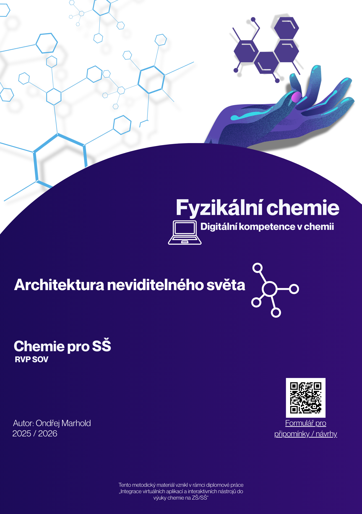

Architektura neviditelného světa - VSEPR
Fyzikální chemie a digitální kompetence v praxi


Výuka chemie často začíná kreslením Lewisových vzorců na tabuli nebo do sešitu. Problém nastává, když si žáci tento dvoudimenzionální (2D) nákres (např. "křížový" vzorec metanu s úhly 90°) zafixují jako realitu. Tento 45minutový výukový modul pro střední školy využívá digitální technologie, konkrétně 3D modely v aplikaci Desmos, k překonání tohoto omezení a k pochopení teorie VSEPR (odpuzování elektronových párů valenční vrstvy).
Cíle a vazba na RVP
Modul se zaměřuje na naplnění výstupů RVP pro oblast chemie i informatiky. V chemii žáci pracují se znalostí o částicové struktuře a učí se předvídat fyzikálně-chemické vlastnosti látek na základě jejich tvaru. Z pohledu informatiky (digitálních kompetencí) žáci interpretují prostorová data získaná z digitálního modelu a uvědomují si omezení zjednodušených 2D nákresů na papíře. Kognitivně se posouvají od pouhého zapamatování (názvy tvarů) až k aplikaci a analýze (jak volný elektronový pár deformuje ideální vazebné úhly).
Použitý nástroj: 3D modely v Desmosu
Ačkoliv je Desmos primárně grafická kalkulačka, tento modul plně využívá její schopnosti vykreslovat a manipulovat s objekty ve 3D prostoru. Výhodou pro učitele je absolutní bezbariérovost - aplikace nevyžaduje po žácích vytváření účtů ani instalaci (ale aplikace jak pro Android tak iOS dostupná je), do interaktivního prostředí vstupují jednoduše přes sdílený odkaz nebo QR kód na pracovním listu. Žáci si mohou modely otáčet, přibližovat a lépe tak vnímat rozdíly mezi atomy a elektronovými doménami.
Jak to funguje ve výuce (E-U-R)
- Evokace (5-8 min): Učitel kreslí na tabuli Lewisovy vzorce vody a metanu a ptá se žáků na vazebné úhly. Očekávané odpovědi (180° nebo 90°) jsou konfrontovány s myšlenkou, že elektrony mají stejný náboj a v reálném 3D prostoru se chtějí dostat co nejdále od sebe.
- Uvědomění (25-30 min): Žáci samostatně (nebo ve dvojicích) pracují s 3D modely na svých zařízeních. Zkoumají uspořádání různých počtů elektronových domén (od 2 do 6) a vytvářejí si obecný vzorec (např. typologii AXE) pro klasifikaci tvarů. Analyzují hlavní sadu molekul (např. H2O, NH3, CO2).
- Reflexe (10 min): Společná kontrola a diskuze. Učitel pokládá reflektivní otázky ("Co mě překvapilo?"). Pro rychlejší žáky je připravena aplikace VSEPR teorie na vysvětlení polarity molekul a jejich chování v mikrovlnné troubě (vektorový součet vazebných dipólů u H2O vs. CCl4 a CO2).
Materiály ke stažení a odkazy
Zde naleznete kompletní metodické listy, žákovské pracovní listy a odkazy na připravené interaktivní plochy.